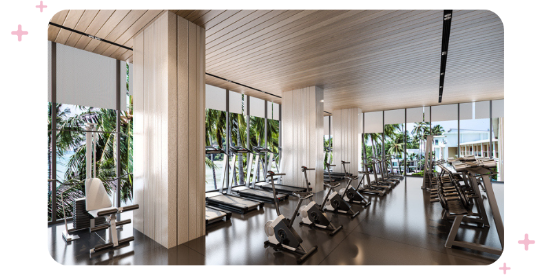

Welcome to our powerhouse of fitness! Dive into a world where sweat meets determination, and goals become achievements. Our expert trainers, state-of-the-art equipment, and vibrant community await to ignite your fitness journey. Join us in sculpting bodies, boosting confidence, and embracing the exhilarating path to a stronger, healthier you. Let's sweat, smile, and succeed together!

We use the best to produce the best.In our our gym we only bring your dreams to reality.
There are various types of gym programs tailored to different fitness goals and preferences. Here are some common types:
Strength Training Program: This program focuses on building muscle strength and size through resistance exercises such as weightlifting. It typically involves lifting heavier weights for fewer repetitions.
Cardiovascular Training Program: This program emphasizes improving cardiovascular health and endurance through activities like running, cycling, swimming, or using cardio machines like treadmills or ellipticals.
Weight Loss Program: Designed to help individuals lose weight, these programs often combine cardiovascular exercises with calorie-controlled diets and sometimes incorporate strength training to preserve muscle mass.
High-Intensity Interval Training (HIIT): HIIT involves short bursts of intense exercise followed by brief recovery periods. It's known for its efficiency in burning calories and improving cardiovascular fitness in a short amount of time.
CrossFit: CrossFit is a high-intensity fitness program that incorporates elements from various disciplines, including weightlifting, gymnastics, and metabolic conditioning. Workouts are typically varied and focus on functional movements performed at high intensity.
Functional Training: This program emphasizes exercises that mimic movements used in everyday activities or sports, aiming to improve overall strength, balance, and flexibility.
Flexibility and Mobility Program: These programs focus on improving joint mobility, flexibility, and range of motion through stretching exercises, yoga, or Pilates.
Sport-Specific Training: Tailored to athletes, these programs aim to enhance performance in a specific sport through exercises that mimic the movements and demands of that sport.
Bodyweight Training: Bodyweight exercises use the individual's own weight as resistance, requiring minimal equipment. Programs can range from beginner to advanced levels and are often accessible for those without access to a gym.
Rehabilitation Programs: Designed for individuals recovering from injuries or surgeries, these programs focus on gradually restoring strength, mobility, and function to the affected areas.
When choosing a gym program, it's essential to consider your fitness goals, current fitness level, any medical conditions or injuries, and personal preferences. Consulting with a fitness professional or personal trainer can help you design a program that's safe, effective, and tailored to your needs.
Benefits of Attending Gym Classes With Us
Professional instruction from experienced trainers
Structured workout routines tailored to individual fitness goals
Variety of classes to choose from, including cardio, strength training, and flexibility
Motivating group atmosphere to keep you accountable and engaged
Access to state-of-the-art equipment and facilities
Opportunities for social interaction and networking with other members
Regular assessments and progress tracking to monitor your fitness journey
Specialized classes or workshops focusing on specific fitness aspects or techniques
Exclusive member perks such as discounts on merchandise or additional services
Flexible class schedules to accommodate various lifestyles and commitments
Top 10 Machines Found in our Gym:
Treadmill
Stationary Bike
Elliptical Trainer
Rowing Machine
Smith Machine
Cable Machine
Leg Press Machine
Chest Press Machine
Pull-Up/Dip Station
Abdominal Crunch Machine
Features of Our Gym:
State-of-the-art cardio machines
Wide range of free weights and strength training equipment
Spacious workout areas with dedicated zones for different exercises
Group fitness studios for classes such as yoga, spinning, and HIIT
Personal training services with certified instructors
Locker rooms with showers and amenities
Childcare services for parents
Member lounge area for relaxation and socializing
On-site nutrition counseling and supplements shop
24/7 access for members with keycard entry
Facilities Available:
Indoor swimming pool with lap lanes
Sauna and steam rooms for post-workout relaxation
Basketball and volleyball courts
Indoor track for running or walking
Outdoor training area for functional workouts
Cafe or juice bar serving healthy snacks and drinks
Physical therapy and rehabilitation center
Pro shop for fitness apparel and accessories
Wi-Fi access throughout the facility
Ample parking space with convenient access
At FlexForge, we're more than just a gym; we're a lifestyle destination committed to transforming lives. Step into our vibrant community of fitness enthusiasts, where every workout is an opportunity to push boundaries, break limits, and achieve greatness. With state-of-the-art facilities, cutting-edge equipment, and expert trainers, we provide the perfect environment for your fitness journey. Whether you're a beginner or a seasoned athlete, our supportive atmosphere ensures you feel empowered every step of the way. Together, we'll sculpt bodies, boost confidence, and redefine what it means to be fit. Join us and discover the exhilaration of reaching your peak potential. Let's sweat, inspire, and celebrate victories together as we embark on this transformative journey toward a healthier, stronger you. At FlexForge, every drop of sweat is a testament to your dedication and determination. Let's make every workout count, because here, your goals become our mission.